ECON 101 - Introduction to Microeconomics |
|
| Instructor: | Predrag Rajsic |
|---|---|
| Office: | HH162 |
| Office Hour: | Tuesday 10:00 - 13:00 |
| Email: | prajsic@uwaterloo.ca |
About This Course
Grading Allocations
5% from Online Review Quizzes;
45% from midterms;
50% from final exam;
2% from the bonus for participation.
Midterms
We have 3 in-class midterms during this term - Jan 26, Feb 16 and Mar 19.
Each midterm owns 15% of your final grade.
Each midterm will have 30 multiple choice questions.
Online Review Quizzes
This owns the 5% of your final grade.
There are total 6 quizzes in LEARN.
Each quiz has 10 multiple choice questions and 2 attempts (only the better result will be recorded); student has 120 minutes to complete each quiz.
Textbook
We are using Parkin, Michael and Robin Bade (2016). Microeconomics: Canada in the Global Environment, 9th edition this term.
However, it is okay to use the 8th edition. (In fact, the 8th edition is included a study guide, which has a lot of multiple questions for you to study).
MyEconLab
An optional online practice tool which contains practice exercises that help you to study well.
Again, it is optional.
Learning Catalytics
This is the 2% participation bonus.
We will using the online tool Learning Catalytics for recording in-class participation.
So bring your laptop every lecture!
Vert's word:
The following notes are combined the lecture notes, lecture PowerPoint and textbook.
All examples are from the lecture notes and lecture PowerPoint.
If you want more examples, read the textbook. (Believe me, the textbook is more useful!)
Chapter 1 - What is Economics? (PPT lecture 1)
This lecture will be updated someday in the future...
Chapter 2 - The Economic Problem (PPT lecture 2)
This lecture will be updated someday in the future...
Continue Chapter 2 - The Economic Problem (PPT lecture 3)
This lecture will be updated someday in the future...
Continue Chapter 2 - The Economic Problem (PPT lecture 4)
This lecture will be updated someday in the future...
Chapter 3 - Demand and Supply (PPT lecture 5)
This lecture will be updated someday in the future...
Continue Chapter 3 - Demand and Supply (PPT lecture 6)
This lecture will be updated someday in the future...
Chapter 4 - Elasticity (PPT lecture 7)
This lecture will be updated someday in the future...
Midterm 1 will cover everything in PowerPoint lecture 1 to 7.
Continue Chapter 4 - Elasticity (PPT lecture 8)
This lecture will be updated someday in the future...
Chapter 8 - Utility and Demand (PPT lecture 9)
Consumption Choices
- the choices people make as a buyer of goods and services is influenced by many factors
- economists summarise as
- Consumption Possibilities
- Preferences
Consumption Possibilities
- are all the things that people can afford to buy
- people can afford many different combinations of goods and services; but they are all limited by people's income and by the prices that people must pay
Study Case:
Alvin, who buys only two things (product A and product B).
In here, the consumption possibilities are limited by Alvin's income, the price of product A and the price of product B.
When Alvin spends all of his income, he reaches the limits of his consumption possibilities.
Alvin's budget line shows the limits of his consumption possibilities.
| 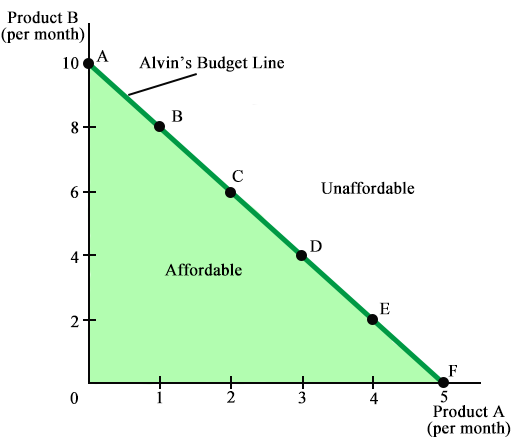 |
Assume Alvin has $40 to spend, the price of product A is $8 and the price of product B is $4. Alvin can afford any of the combinations at the points A to F. Some goods are indivisible and must be bought in whole units at the points marked. Other goods are divisible goods and can be bought in any quantity. |
Preferences
The choice that Alvin makes depends on his preferences - he likes it or not.
His benefit or satisfaction from consuming a good or service is called utility.
Total Utility
- is the total benefit a person gets from the consumption of goods
- generally, more consumption gives more total utility
Marginal Utility
- is from a good is change in total utility that results from a unit-increase in the quantity of the good consumed
- as the quantity consumed of a good increases, the marginal utility from it decreases
- this decrease in marginal utility as the quantity of the good consumed increases the principle of diminishing marginal utility
Marginal utility is positive, but it decreases as the quantity of a good consumed increases.
Positive marginal utility means the things that people enjoy and want more.
Negative marginal utility means the things that people do not want more.
For example, hard labour and polluted air.
Utility-Maximising Choice
Consumers want to get the most utility possible from their limited resources.
They make the choice that maximises utility.
Choosing at the Margin
When shopping, people have to make a choice - would they spend a dollar more or a dollar less on a good bring more total utility?
Marginal Utility
- the increase in total utility that results from consuming one more unit or the good
Marginal Utility Per Dollar
- the marginal utility from a good that results from spending one more dollar on it
- equals the marginal utility from a good divided by its price
Example 1:
- the marginal utility for product A: MUA
- the price of product A: PA
- the marginal utility per dollar from product A is MUA ÷ PA
Example 2:
- the marginal utility for product B: MUB
- the price of product B: PB
- the marginal utility per dollar from product B is MUB ÷ PB
By comparing MUA ÷ PA and MUB ÷ PB, we can determine whether Alvin has allocated his budget in the way that maximised his total utility.
Utility-Maximising Rule
A consumer's total utility is maximised by the following rules:
- spend all available income
- equalise the marginal utility per dollar for all goods
| Product A ($8 each) | Product B ($4 each) | ||||||
|---|---|---|---|---|---|---|---|
| Quantity | Marginal Utility | Marginal Utility Per Dollar | Quantity | Marginal Utility | Marginal Utility Per Dollar | ||
| B | 1 | 50 | 50 ÷ 8 = 6.25 | 8 | 10 | 10 ÷ 4 = 2.25 | |
| C | 2 | 40 | 40 ÷ 8 = 5.00 | 6 | 20 | 20 ÷ 4 = 5.00 | |
| D | 3 | 32 | 32 ÷ 8 = 4.00 | 4 | 24 | 24 ÷ 4 = 6.00 | |
When do we use this model?
- explaining real-world phenomena using a logical framework
- when the price of a good goes down, people buy more of that good and less of a substitute good
- when people's income increases, in most cases, they buy more of everything
Continue Chapter 8 - Utility and Demand (PPT lecture 10)
Predictions of Marginal Utility Theory
- a change in the price of one good changes the demand for another good
Example:
If the price of product A falls, then MUA ÷ PA rises.
So before the consumer changes the quantities consumed, MUA ÷ PA > MUB ÷ PB.
To restore consumer equilibrium (maximum total utility), the consumer decreases the quantity of product B consumed to drive up the MUB and restore MUA ÷ PA = MUB ÷ PB.
| 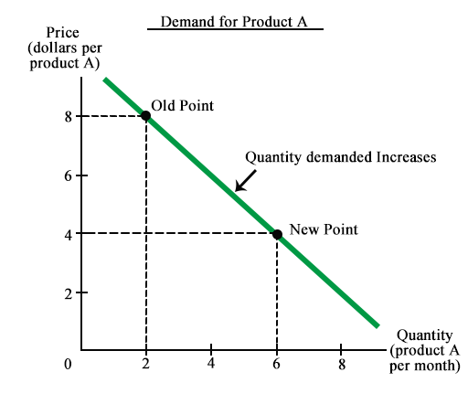 | 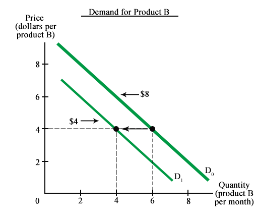 | ||
|
A fall in the price of product A increases the quantity of product A demanded: a movement along the demand curve for product A. |
Alvin's demand for product B when the price of product A is decrease... Decreases the demand for product B: a shift of the demand curve for product B. |
How a change in the price of product A affects Alvin's choices?
| product A ($4 each) | product B ($8 each) | |||||||
|---|---|---|---|---|---|---|---|---|
| Quantity | Marginal Utility | Marginal Utility Per Dollar |
Quantity | Marginal Utility | Marginal Utility Per Dollar |
|||
| 0 | 0 | 10 | 5 | 1.25 | ||||
| 1 | 50 | 12.50 | 9 | 7 | 1.75 | |||
| 2 | 40 | 10.00 | ← before | 8 | 10 | 2.50 | ||
| 3 | 32 | 8.00 | 7 | 13 | 3.25 | |||
| 4 | 28 | 7.00 | 6 | 20 | 5.00 | ← before | ||
| 5 | 26 | 6.50 | 5 | 22 | 5.50 | |||
| 6 | 24 | 6.00 | ← now | 4 | 24 | 6.00 | ← now | |
| 7 | 22 | 5.50 | 3 | 36 | 9.00 | |||
| 8 | 20 | 5.00 | 2 | 48 | 12.00 | |||
Before Alvin changes what he buys: MUA ÷ PA > MUB ÷ PB.
To maximise total utility, Alvin buy more product A and buy less product B.
A Rise in Income
When income increases, the demand for a normal good increases.
Example:
Given the prices of product A and product B, when Alvin's income increases from $49 to $56 a month, he buys more product A and more product B.
Note: Product A and product B are normal goods in our study case.
| Alvin's demand for product A when his income is... | Alvin's demand for product B when his income is... |
| 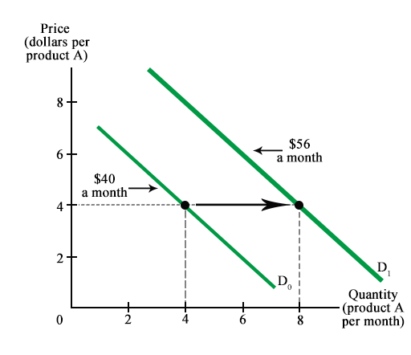 | 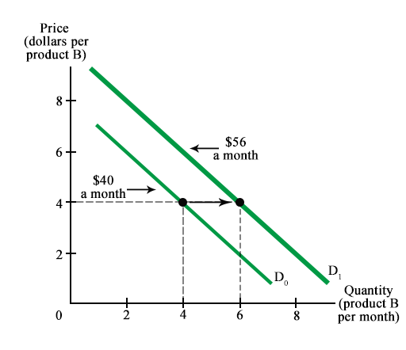 |
The Paradox of Value
Why is water (essential to life) far cheaper than diamonds (not essential to life)?
Paradox Resolved
The paradox is resolved by distinguishing between total utility and marginal utility.
| 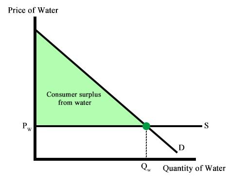 | 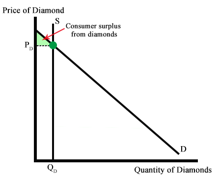 |
|
|
Value and Consumer Surplus
- the supply of water is perfectly elastic, so the quantity of water consumed is large and the consumer surplus from water is large
- the supply of diamonds in perfectly inelastic, so the price is high and the consumer surplus from diamonds is small
New Ways of Explaining Consumer Choices
- Behavioural Economics
- Neuroeconomics
Behavioural Economics
-
studies the ways in which limits on the human brain's ability to compute and implement rational decisions influences economic behaviour
- both the decisions that people make and the consequences of those decisions for the way markets work
-
three impediments to rational choice
-
bounded rationality
- rationality that is bounded by the computing power of the human brain
-
faced with uncertainty, consumers cannot rationally make choices
-
instead rely on other decision-making methods
- e.g. rules of thumb, listening to the views of others, gut instinct
-
instead rely on other decision-making methods
-
bounded willpower
- the less-than-perfect willpower that prevents people from making a decision that they know, at the time of implementing the decision, they will regret later
-
bounded self-interest
- the limited self-interest that sometimes results in suppressing people's own interests to help others
-
main applications in two areas:
- finance, where uncertainty is the key factor
- savings, where future is the key factor
-
bounded rationality
One behaviour observed by behavioural economists is more general and might affect someone's choices.
Endowment Effect
- the tendency for people to value something more highly simply because the own it
Neuroeconomics
- the study of the activity of the human brain when a person makes an economic decision
Controversy
Should economics focus on explaining the decisions people observe? Or should if focus on what goes on inside people's heads?
Most economists focus on the first question, not the second one.
Chapter 9 - Possibilities, Preferences and Choices (PPT lecture 11)
Consumption Choices
- limited by income and by prices
- budget line describes the limit to someone's consumption choices
Example: Household consumption choices are constrained by its income and the prices of goods and services available.
Recall Alvin's example from chapter 8...
The budget line is a constraint on Alvin's consumption choices.
Alvin can afford any point on his budget line or inside it, but not any point outside his budget line.
Budget Equation
- use to describe the budget line
- Expenditure = Income
Example: Let
- PA be the price of product A
- QA be the quantity of product A
- PB be the price of product B
- QB be the quantity of product B
Then Alvin's budget equation is: Income = PAQA + PBQB.
| Income | = | PAQA + PBQB |
| Income ÷ PB | = | (PAQA ÷ PB) + QB |
| QB | = | (Income ÷ PB) - (PAQA ÷ PB) |
Real Income
- someone's income expressed as a quantity of goods that he/she can afford to buy
- e.g. Income ÷ PB is Alvin's real income in therms of product B
Relative Price
- the price of one good divided by the price of another good
- e.g. PAQA ÷ PB is the relative price of product A in terms of product B
A Change in Prices
When prices changes, so does the budget line.
| 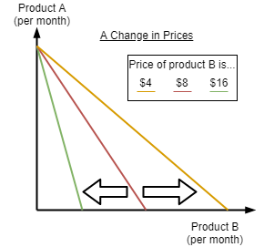 |
|
A Change in Income
|
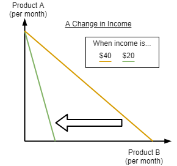 |
Preferences and Indifference Curves
|
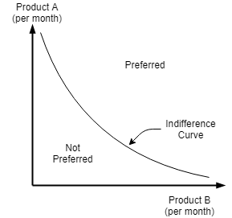 |
Example:
| For vegetarian, steal is indifference. |
For meat-lover, salad is indifference. | |
| 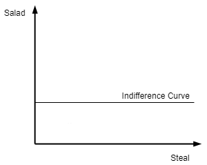 | 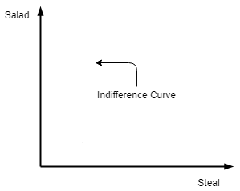 | |
| Increase the quantity of steal won't make vegetarian happy! | Increase the quantity of salad won't make meat-lover happy! |
Marginal Rate of Substitution (MRS)
- measures the rate at which a person is willing to give up good y to get an additional unit of good x while at the time remain indifferent (remain on the same indifference curve)
- the magnitude of the slope of the indifference curve measures MRS
Diminishing Magnitude Rate of Substitution
- a general tendency for a person to be willing to give up less of good y to get one more unit of good x, while at time same time remain indifferent as the quantity of good x increases
| 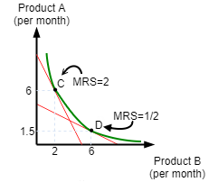 |
Example: At point C, we give up 2 units of good A to exchange 1 more unit of good B. Hence, MRS = 2. At point D, we give up 0.5 units of good A to exchange 1 more unit of good B. Hence, MRS = 1/2. |
Degree of Substitutability
- the shape of the indifference curves reveals the degree of substitutability between two goods
| 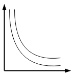 | 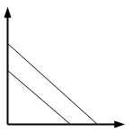 | 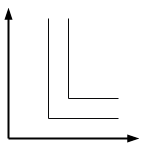 | ||
|
Ordinary Goods e.g. movie and pop |
Perfect Substitutes e.g. different brands of pens in campus bookstore and local grocery store. (see explanation 1) |
Perfect Complements e.g. left shoe and right shoe (one more left/right shoe without the other one is useless!) |
Explanation 1:
Most people do not care about the brand of pen.
If someone can get 1 more pen in local grocery store than campus bookstore, he/she will go local grocery store.
Predicting Consumer Choices
-
Best Affordable Choice: the consumer's best affordable choice...
- is on the budget line
- is on the highest attainable indifference curve
- has a marginal rate of substitution between the two goods equal to relative price of the two goods
A change in Price
- Price Effect: the effect of a change in the price of a good on the quantity of the good consumed
|
Example: Point C is the best affordable point when product A is $8. Point D is the best affordable point when product A is $4. From point A, someone buys 2 product A a month when the price of product A is $8. From point B, someone buys 6 product A a month when the price of product A is $4. |
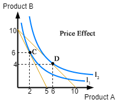
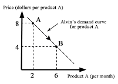 |
A Change in Income
- Income Effect: the effect of a change in income on the quantity of good consumed
|
Example: The decrease in someone's income will shift the income effect to left (best affordable point J becomes K), and so his/her demand for product A decreases, shown by a leftward shift of his/her demand curve for product A. |


|
Midterm 2 will cover everything in PowerPoint lecture 8 to 11.
Chapter 10 - Organising Production (PPT lecture 12)
Most of the firms do not make the things they sell.
For example, Apple does not make iPhone.
Questions:
How do firms decide what to make themselves and what to buy from other firms?
How do the millions of firms around the world make their business decisions?
The Firm and Its Economic Problem
Firm is an institution that hires factors of production and organises them to produce or sell goods and services.
The firm's goal is to maximise profit.
If the firm fails to maximise its profit, it is either eliminated or taken over by another firm that seeks to maximise profit.
An alternative formulation of firm's goal is to make profit and avoid loss.
Notice that profit maximisation is not required in here.
Accounting Profit: Profit = Total Revenue - Total Cost
Economic Accounting: Economic Profit = Total Revenue - Total Cost
Here, the total cost is measured as the opportunity cost of production.
The opportunity cost of any action is the highest-valued alternative forgone.
A firm's opportunity cost of production is the value of the best alternative use of the resources that a firm uses in production.
It is the sum of the cost of using resources:
- bought in the market
- owned by the firm
- supplied by the firm's owner
Resources - Bought in the Market
- a firm incurs an opportunity cost when it buys resources in the market
- the amount spent on these resources is an opportunity cos of production since the firm could have bought different resources to produce some other goods and service
Resources - Owned by the Firm
- a firm incurs an opportunity cost when it uses its own capital
- the cost of using capital owned by the firm is an opportunity cost of production since the firm could sell the capital that it owns and rent capital from another firm
-
Implicit Rental Rate of Capital
- the firm's opportunity cost of using the capital it owns
-
two components
-
Economic Depreciation: the fall in the market value of a firm's capital over a given period
- Economic Depreciation = Beginning of Market Price of the Capital - Ending of Market Price of the Capital
- Forgone Interest: the funds used to buy capital could have been used for some other purpose, and in their next best use, they would have earned interest
-
Economic Depreciation: the fall in the market value of a firm's capital over a given period
Resources - Supplied by the Firm's Owner
-
firm's owner may supply both entrepreneurship and labour
- Entrepreneurship
- the factor of production that organises a firm and makes its decisions might be supplied by the firm's owner or by a hired entrepreneurship
- return to entrepreneurship: Profit
-
Normal Profit: the profit that an entrepreneur earns on average
- it is cost of entrepreneurship and opportunity cost of production
- Owner's Labour Services
- in addition to supply entrepreneurship, the firm's owner might supply labour without take a wage
- the opportunity cost of the owner's labour is the wage income forgone by not taking the best alternative job
- Entrepreneurship
Example:
Total Revenue: $400,000
Cost of Resources Bought in Market: $230,000
Cost of Resources Owned by Firm: $40,000
Cost of Resources Supplied by Owned: $100,000
| Economic Profit | = Total Revenue - Total Cost |
| = $400,000 - (Cost of Resources Bought in Market + Cost of Resources Owned by Firm + Cost of Resources Supplied by Owned) | |
| = $400,000 - ($230,000 + $40,000 + $100,000) | |
| = $400,000 - $370,000 | |
| = $30,000 |
To make profit, a firm must make 5 basic decisions:
- what to produce and in what quantities
- how to produce
- how to organise and compensate its managers and workers
- how to market and price its products
- what to product itself and what to buy from other firms
The firm's profit is limited by three features of the environment:
-
technology constraints
-
Technology: any method of producing a good or service
- including the detailed designs of machines, the layout of the workplace, the organisation of the firm
-
Technology: any method of producing a good or service
-
information constraints
-
We never possess all the information we would like to have to make decisions.
- We leak information about both the future and the present.
-
A firm is constrained by limited information about...
- the quality and efforts of its workforce
- the current and future buying plans of its customers
- the plans of its competitors
-
We never possess all the information we would like to have to make decisions.
-
market constraints
- the quantity each firm can sell and the price it can obtain are constrained by its customers' willingness to pay and by the prices and marketing efforts of other firms
- the resources that a firm can buy and the prices it must pay for them are limited by the willingness of people to work for and invest in the firm
- market constraints and the expenditures firms make to overcome them limit the profit a firm can make
Technology and Economic Efficiency
Technology Efficiency
- occurs when a firm uses the least amount inputs to produce a given quantity of output
- different combinations of inputs might be used to produce a given good
- if it is impossible to produce a given good by decreasing any one input (and all other inputs constant), then production is technologically efficient
Economic Efficiency
- occurs when the firm produces a given quantity of output at the least cost
- economically efficient method depends on the relative costs of capital and labour
What is the different between technology efficiency and economic efficiency?
Technology efficiency cares about the quantity of inputs used in production for a given quantity of output.
However, economic efficiency cares about the cost of inputs used.
Notice that an economically efficient production process also is technologically efficient.
But an technologically efficient process may not be economically efficient.
Also, technologically inefficient method is never economically efficient.
Changes in the input prices influence the value of the inputs, but not the technological process for using them in production.
Information and Organisation
A firm organises production by combining and coordinating productive resources using a mixture of two systems:
-
Command Systems
- a method of organising production that uses a managerial hierarchy
- commands pass downward through the hierarchy and information (feedback) passes upward
- are relatively rigid and can have many layers of specialised management
-
Incentive Systems
- a method of organising production that uses a market-like mechanism to induce workers to perform in ways that maximise the firm's profit
Most firms use a mix of command and incentive systems to maximise profit.
Firms use command systems when it is easy to monitor performance or when a small deviation from the ideal performance is very costly.
Firms use incentive systems whenever monitoring performance is impossible or too costly to be worth doing.
Continue Chapter 10 - Organising Production (PPT lecture 13)
The Principal-Agent Problem
The problem of devising compensation rules that induce an agent to act in the best interest of a principal.
For example, the stockholders of a firm are the principals and the firm's managers are agents; the stockholders must induce managers to act in the stockholders' best interest.
Coping with the Principal-Agent Problem
A principal must create incentives that induce each agent to work in the interests of the principal. The are 3 ways of coping with the principal-agent problem:
-
Ownership
- often offered to managers, gives the managers an incentive to maximise the firm's profits, which is the goal of the owners, the principals
-
Incentive Pay
- links managers' or workers' pay to the firm's performance and helps align the managers' and workers' interests with those of the owners, the principals
-
Long-Term Contacts
- can tie managers' or workers' long-term rewards to the long-term performance of the firm
- this arrangement encourages the agents work in the best long-term interests of the firm owners, the principals
These three ways of coping with the principal-agent problem give rise to different types of business organisation.
Three Main Types of Business Organisation
-
Sole Proprietorship
-
a firm with a single owner (a proprietor) who has unlimited liability
- Unlimited Liability: the legal responsibility for all the debts incurred by the firm up to an amount equal to the entire wealth of the owner
- example: farmers, programmers and artists often operate as sole proprietorships
- proprietor also makes management decisions and receives the firm's profit, is responsible for its loss
- profits from a sole proprietorship are taxed the same as the owner's other income
-
a firm with a single owner (a proprietor) who has unlimited liability
-
Partnership
- a firm with two or more owners who have unlimited liability
- partners must agree on a management structure and how to divide up the profit
-
profits from partnerships are taxed as the personal income of the owners
- but each partner is legally responsible for all the debts of the partnership
- Joint Unlimited Liability: liability for the full debts of the partnership
- example: most law firms are partnerships
-
Corporation
- is owned by one or more stockholders with limited liability, which means the owners who have legal liability only for the initial value of their investment
- the personal wealth of the stockholders is not at risk if the firm goes bankrupt
-
the profits of corporations is taxed twice
- a corporate tax on firm profits
- income taxes paid by stockholders receiving their after-tax profits distributed as dividends
The Pros and Cons of Different Types of Firms
| Advantages | Disadvantages | |
|---|---|---|
| Sole Proprietorship | easy to set up | bad decisions made by the manager are not subject to review |
| managerial decision making is simple | owner's entire wealth is at risk | |
| profits are taxed only once as owner's income | firm dies with the owner | |
| cost of capital and labour is high relative to that of a corporation | ||
| Partnerships | easy to set up | achieving consensus may be slow and expensive |
| employ diversified decision-making processes | owner's entire wealth is at risk | |
| can survive the withdrawal of a partner | withdrawal of partner may create capital shortage | |
| profits are taxed only once | cost of capital and labour is high relative to that of a corporation | |
| Corporation | limited liability for its owners | complex management structure may lead to slow and expensive |
| large-scale and low-cost capital that is easily available | profits taxed twice - as corporate profit and shareholder income | |
| professional management not restricted by ability of owners | ||
| perpetual life | ||
| lower cost from long-term labour contracts |
Markets and the Competitive Environment
Economists identify four market types:
-
Perfect Competition
- arises when there are many firms, each selling an identical product, many buyers, and no restrictions on the entry of new firms into the industry
- many firms and buyers are well-informed about the prices of the products of each firm in the industry
- example: the worldwide markets for wheat, corn, rice and other grain crops
-
Monopolistic Competition
- a market structure in which a large number of firms compete by making similar but slightly different products
- Product Differentiation: making a product slightly different from the product of a competing firm
-
Oligopoly
- a market structure in which a small number of firms compete
- example: computer software, aeroplane manufacture, international air transportation
-
Monopoly
- arises when there is one firm, which produces a good or service that has no close substitutes and in which the firm is protected by a barrier preventing the entry of new firms
-
Local Monopolies: restricted to a given location
- example: gas, electricity, cable television, water suppliers
- example for global monopoly: Microsoft Corporation
Measures of Concentration
Economists use two measures of market concentration:
- the Four-Firm Concentration Radio
- the Herfindahl-Hirschman Index (HHI)
the Four-Firm Concentration Radio
- the percentage of the total industry sales accounted for by the four largest firms in the industry
- the radio is almost 0 for perfect competition to 100% for monopoly
- main measure used to assess market structure
Example 1: Assume we have 14 firms produce good 1.
| Good 1 | ||
|---|---|---|
| Firm | Sales | |
| A, Inc. | 200 | |
| B, Inc. | 150 | |
| C, Inc. | 100 | |
| D, Inc. | 250 | |
| Largest 4 firms | 700 | |
| Other 10 firms | 175 | |
| Industry | 875 | |
Four-Firm Concentration Radios of Good 1 = (700 ÷ 875) × 100 = 80%
Example 2: Assume we have 1004 firms produce good 2.
| Good 2 | ||
|---|---|---|
| Firm | Sales | |
| Alvin's | 25 | |
| Bob's | 20 | |
| Clayton's | 18 | |
| David's | 17 | |
| Largest 4 firms | 80 | |
| Other 1000 firms | 1520 | |
| Industry | 1600 | |
Four-Firm Concentration Radios of Good 1 = (80 ÷ 1600) × 100 = 5%
Herfindahl-Hirschman Index (HHI)
- the square of percentage market share of each firm summed over the largest 50 firms in the industry
- the larger the measure of market concentration, the less competition that exists in the industry
Example 1: We have 500 firms in the market and the market shares of each firm is 0.2%.
HHI = 0.22 + 0.22 + ... + 0.22 = 500(0.04) = 20
Example 2:
| Firm | Sales | Percentage |
|---|---|---|
| 1 | 50 | (50 ÷ 85) × 100 ≈ 58.82% |
| 2 | 10 | (10 ÷ 85) × 100 ≈ 11.76% |
| 3 | 5 | (5 ÷ 85) × 100 ≈ 5.88% |
| 4 | 20 | (20 ÷ 85) × 100 ≈ 23.54% |
| Total | 85 | 100% |
HHI = 58.822 + 11.762 + 5.882 + 23.542 = 4186.796
Produce or Outsource? Firm and Markets
Factors of production can be coordinated either by firms or markets
-
Firm Coordination
- firms hire labour, capital and land, and by using a mixture of command systems and incentive systems organise and coordinate their activities to produce goods and services
-
Market Coordination
- market coordination production by adjusting prices and making the decisions of buyers and sellers of factors of production and components consistent
Why Firms?
Firms coordinate production when a task can be performed more efficiently by a firm than by market.
There are four keys reasons might make firms more efficient: firms can achieve...
- low transactions costs
- economies of scale
- economies of scope
- economies of team production
Transactions Costs
- the costs arising from finding someone with whom to do business, reaching agreement on the price and other aspects of the exchange, and ensuring that the terms of the agreement are fulfilled
Economies of Scale
- occur when the cost of producing a unit of a good falls as its output rate increases
Economies of Scope
- arise when a firm can use specialised inputs to produce a range of different goods at a lower cost than otherwise
Team Production
- a production process in which the individuals in a group specialise in mutually supportive tasks
Chapter 11 - Output and Costs (PPT lecture 14)
Continue Chapter 11 - Output and Costs (PPT lecture 15)
Continue Chapter 11 - Output and Costs (PPT lecture 16)
Find a typo or mistake? Feel free to contact me and I will correct it as soon as possible.
Thanks For Coming Here. - Calvin Li
 This work by Chun Kit (Calvin) Li is licensed under a Creative Commons Attribution-NonCommercial 4.0 International License. Chun Kit (Calvin) Li © 2017 - 2018
This work by Chun Kit (Calvin) Li is licensed under a Creative Commons Attribution-NonCommercial 4.0 International License. Chun Kit (Calvin) Li © 2017 - 2018